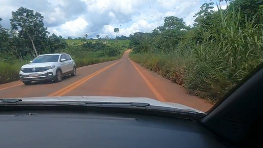

00:00:27.080
Carro branco cruza em sentido contrário numa estrada asfaltada com acostamentos vermelhos e vegetação alta.
BR-230 (Transamazônica), Pará · confirmado
O apresentador situa a primeira parte da viagem, de Medicilândia em direção a Altamira.
Transcrição · 00:00:18 | 00:00:26 | 00:00:36
Turismo Aqui — quadro de vídeo publicado no YouTube